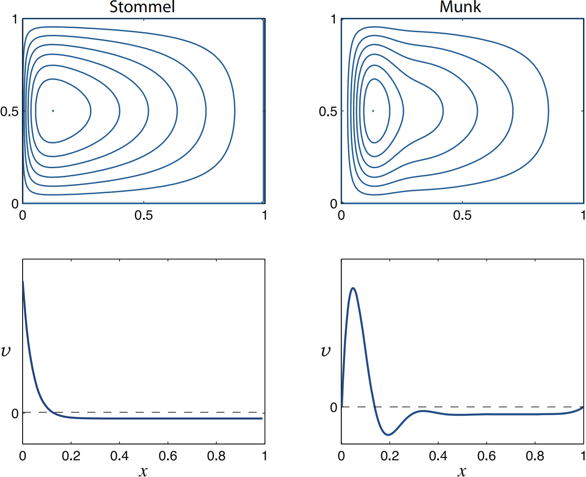

The Stommel and Munk solutions, with the wind stress $\tau = -\cos \pi y$, for $x,y \in (0,1)$. Upper panels are contours of streamfunction in the $x$-$y$ plane, and the flow is clockwise.
The lower panels are plots of meridional velocity, $v$, as a function of $x$, in the centre of the domain.
The Munk layers bring the tangential as well
as the normal velocity to zero. The eastern boundary layer has a similar thickness to the western
boundary layer, but is not as dynamically important since its raison d'etre is to enable the no-slip
condition to be satisfied, a relatively weak frictional constraint that manifests itself by a boundary
layer in which the flow parallel to the boundary is slowed down.
The western
boundary layer exists in order that the no-normal flow condition can be satisfied, which causes
a qualitative change in the flow pattern.
1Vallis, G.K. (2017) Atmospheric and Oceanic Fluid Dynamics: Fundamentals and Large-Scale Circulation. 2nd edn. Cambridge: Cambridge University Press.